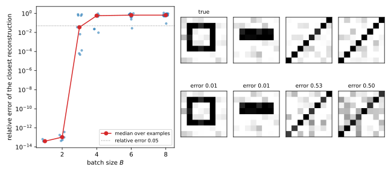

14 Gradient inversion
14.1 Why this matters
A phone keyboard learns from what its users type, and the raw text never leaves the phones. Instead, a server sends the current model to each phone. The phone computes the gradient of the loss on its own few examples and sends back only that gradient. The server averages the gradients of many phones and takes a training step. This is the setting of federated learning (FL), and it is often described as private because “the data stay on the device”. Later parts study FL itself. This chapter asks one question about it: what does a single client’s gradient reveal about the client’s data?
The answer is often everything. A gradient is not a summary chosen to hide the data. It holds one derivative of the loss for every parameter of the model, often millions of them, and many of those derivatives are simple functions of the input. This chapter reads the data back out in four ways, from an exact division to a search. It then asks how much the client gains by averaging the gradient over a batch, and the answer is much less than you might hope.
14.2 The attacker and the experiments
The attacker in this chapter is the server. It is honest-but-curious in the sense of Threat models and privacy games, so it follows the protocol and only analyses what it receives. It sees each client’s own update, not just the final model, which is the strongest level of access in that chapter, the transcript. It also knows the architecture and every parameter of the model, since it chose them.
A client holds a batch of \(B\) labelled examples. Example number \(i\) in the batch has an input \(x_i\) and a label \(y_i\). The client’s training loss is the average of the losses on its examples. It sends the gradient of that average, which lists how fast the loss changes as each parameter changes (Optimization). The derivative of an average is the average of the derivatives, so the update is the average of the gradients of the single examples: \[g = \frac1B\sum_{i=1}^B\nabla_\theta\ell(\theta; x_i, y_i). \tag{14.1}\] In this formula, \(\theta\) stands for all the parameters of the model, and \(\ell(\theta; x_i, y_i)\) is the loss on example \(i\).
All the experiments use \(8\times8\) grey-scale images of four shapes: a horizontal bar, a vertical bar, a diagonal and a square outline. Each image is shifted at random and has pixel noise. The network has one hidden layer. A fully connected layer turns the 64 pixels into one number per hidden unit, and an activation function is applied to each unit. It is either the ReLU, which passes positive values and replaces negative ones by 0, or the sigmoid, which squashes every value smoothly into the range from 0 to 1. A second fully connected layer turns the hidden units into one score per class, called a logit.
The softmax turns the logits into probabilities that are all positive and add up to 1. The loss is the cross-entropy, minus the log of the probability the model gives to the true label. The network has 32 hidden units and sits at its random initialization, as in the first round of training. Counting the weights and biases of both layers, it has 2,212 parameters, so the gradient has 2,212 entries.
The attack plays the reconstruction game of Threat models and privacy games on one client. A challenger draws the batch from the population and keeps the inputs secret, and the attacker sees the model and the update \(g\). It outputs one reconstruction per example, scored by its relative error, the length of the mistake as a fraction of the length of the input. An error of 0 is a perfect reconstruction, and an error of 1 is a mistake as large as the image itself. Each true example is matched to its closest reconstruction, because an average does not change when the examples are reordered, so the gradient keeps no record of their order. The baseline is a guess from the population alone, such as the average image of a shape.
14.3 Three facts about gradients
Every attack in this chapter rests on three facts about how a gradient is computed. The first explains why a gradient contains the input at all.
A fully connected layer gives one output per unit. Each unit multiplies every input by a weight of its own, adds up the products and adds a bias. Write \(a_j\) for the output of unit number \(j\). The weight that this unit gives to the input \(x_k\) is written \(W_{jk}\). So a small change in the weight \(W_{jk}\) changes \(a_j\) by \(x_k\) times that change. How much that moves the loss depends on everything after the layer. The rate at which the loss responds to \(a_j\) is called the backward signal \(\delta_j\) of unit \(j\).
The chain rule multiplies the two rates, so the loss changes with the weight \(W_{jk}\) at the rate \(\delta_jx_k\). The bias is added to \(a_j\) directly, so the loss changes with it at the rate \(\delta_j\) alone. Collected into a matrix with the shape of the weights \(W\) and a vector with the shape of the biases \(b\), these rates are \[\nabla_W\ell = \delta\,x^\top, \qquad \nabla_b\ell = \delta. \tag{14.2}\] A matrix built this way, with the product \(\delta_jx_k\) in row \(j\) and column \(k\), is called the outer product of the two vectors. Its row \(j\) is the input \(x\) multiplied by the single number \(\delta_j\). The backward signals depend on everything after the layer, including the loss and the label, but the input depends on none of it. So whatever the rest of the network does, it can only rescale the rows of the weight gradient, and the layer’s input sits in every row.
The second fact concerns the last layer, where the softmax turns the logits into probabilities and the cross-entropy scores them. Write \(z\) for the vector of logits and \(p\) for the vector of predicted probabilities. Write \(e_y\) for the one-hot vector of the label \(y\), which has a 1 at the label’s position and 0 elsewhere. The backward signal at the logits is the difference of the two: \[\frac{\partial\ell}{\partial z} = p - e_y. \tag{14.3}\] The softmax never gives a probability of exactly 0 or 1, because it is built from exponentials, which are always positive. So the entry at the true label, \(p_y - 1\), is negative, and every other entry is a positive probability. This sign pattern is what label recovery uses.
The third fact gives the backward signals of the first layer. Write \(\delta_2\) for the vector of backward signals at the logits, which the second fact says is \(p - e_y\), and \(\delta_1\) for the vector of backward signals of the hidden units. Backpropagation computes \(\delta_1\) from \(\delta_2\). Each hidden unit feeds every logit through a weight of the second layer, so it collects the logits’ signals weighted by those connections. It then multiplies by the slope of the activation function \(\sigma\) at that unit: \[\delta_1 = (W_2^\top\delta_2)\odot\sigma'(a). \tag{14.4}\] Here \(W_2\) is the weight matrix of the second layer, and \(\sigma'(a)\) holds the slope of the activation at each hidden unit. The symbol \(\odot\) multiplies two vectors entry by entry.
For the ReLU the slope is 1 if the unit is switched on and 0 if it is switched off. So a unit that is switched off on an input has a backward signal of 0, and by the first fact its row of the weight gradient is all zeros.
14.4 Exact recovery from a fully connected layer
Is there any computation, short of a search, that gives back the client’s input from its gradient? For the most common first layer of all, a fully connected layer with a bias, there is one division. The observation goes back at least to Phong et al. (2018), who made it for this federated setting.
Suppose the client sends the gradient of a single example, and the first layer is fully connected with a bias. Write \(\delta_{1,j}\) for the backward signal of hidden unit \(j\). By the first fact, row \(j\) of the weight gradient is the input scaled by \(\delta_{1,j}\), and entry \(j\) of the bias gradient is that same number. Dividing the row by the bias entry cancels the scale and leaves the input. This works for every unit whose bias gradient is not zero: \[x = \frac{(\nabla_{W_1}\ell)_{j,:}}{(\nabla_{b_1}\ell)_j}. \tag{14.5}\] The top of the fraction is row \(j\) of the first layer’s weight gradient, and the bottom is entry \(j\) of its bias gradient. Since every row is a multiple of the same vector, the weight gradient also has rank one: all its rows lie on a single line, the line through \(x\).
The depth of the network, the activations above, the loss and the label all sit inside the number \(\delta_{1,j}\), and that number cancels. So a network with twenty layers above the first one and a custom loss leaks its input in exactly the same way. The attack needs no optimization, no prior knowledge of what the data look like and no knowledge of the label. It also checks itself, because every usable unit must give the same answer, so ratios that agree tell the attacker it has the input. Applied at a deeper fully connected layer, the same division gives that layer’s input, an intermediate feature vector.
Table 14.1 works through a network small enough to compute by hand. It has three inputs, two ReLU units and two classes. Its first layer has weights \(W_1\) and bias \(b_1\), and its second layer has weights \(W_2\): \[W_1 = \begin{pmatrix}0.4 & -0.2 & 0.1\\ 0.3 & 0.5 & -0.4\end{pmatrix},\quad b_1 = \begin{pmatrix}0.1\\ -0.1\end{pmatrix},\quad W_2 = \begin{pmatrix}1 & -1\\ 0.5 & 0.5\end{pmatrix}. \tag{14.6}\] The second layer has no bias. The example is \(x = (0.5, 1, 0.2)\), and its label is the first class. In the table, \(h\) is the vector of hidden values after the ReLU.
| Step | Quantity | Value |
|---|---|---|
| Forward | \(a = W_1x + b_1\) | \((0.12, 0.47)\) |
| \(h = \max(a, 0)\) | \((0.12, 0.47)\), both units on | |
| \(z = W_2h\) | \((-0.35, 0.295)\) | |
| \(p = \mathrm{softmax}(z)\) | \((0.3441, 0.6559)\) | |
| Backward | \(\delta_2 = p - e_y\) | \((-0.6559, 0.6559)\) |
| \(\delta_1 = (W_2^\top\delta_2)\odot\sigma'(a)\) | \((-0.3279, 0.9838)\) | |
| Gradient | \(\nabla_{W_1}\ell = \delta_1x^\top\) | rows \((-0.1640, -0.3279, -0.0656)\) and \((0.4919, 0.9838, 0.1968)\) |
| \(\nabla_{b_1}\ell = \delta_1\) | \((-0.3279, 0.9838)\) | |
| Attack | row 1 / \((-0.3279)\), row 2 / \(0.9838\) | \((0.5, 1, 0.2)\) and \((0.5, 1, 0.2)\) |
The server sees only the gradients, whose two rows are visibly the same vector at two scales, and each division gives back the input. On one image and the network with 32 ReLU units, 13 units are switched on. Every one of their 13 ratios equals the image to a relative error of at most \(6.7\times10^{-17}\), which is rounding error (Figure 14.1).
Two things weaken the division without stopping it. With the ReLU, a unit switched off on \(x\) has a backward signal of 0 and gives nothing. But a single active unit is enough, and a random network almost always has one. Without a bias there is no denominator. Every row still points along \(x\), though, so \(x\) is known up to one number, and a one-dimensional search finds it.
What stops the division is a convolutional first layer. A convolution applies the same small filter to every patch of the image, the small square of pixels under the filter at one position. The filter’s weights are used at every position, so their gradient adds up one outer product per patch, and no division separates the sum. That is why images fed to convolutional networks need the search of Section 14.6. A batch of several examples also turns the gradient into a sum, which defeats the division for some examples but not all (Section 14.7).
14.5 Label recovery from the last layer
The gradient depends on the label too, and the label is often the most sensitive part of an example, such as a diagnosis. Zhao, Mopuri & Bilen (2020) noticed that the label can be read off the last layer without any search. The rules below need a last layer that uses the softmax with the cross-entropy loss, and each comes from the sign pattern of the second fact.
The first rule needs a bias in the last layer, and works on a single example. By the first fact, the last layer’s bias gradient equals the backward signal at the logits, which the second fact says is \(p - e_y\). Every entry is a positive probability except the one at the true label, where subtracting 1 makes it negative. So the label is the position of the smallest entry, the only negative one: \[y = \arg\min_k(\nabla_{b_2}\ell)_k. \tag{14.7}\]
The second rule reads the last layer’s weight gradient instead. By the first fact, its row \(k\) is entry \(k\) of the backward signal times the vector \(h\) of hidden values. If those values cannot be negative and are not all zero, as for the ReLU and the sigmoid, the multiplication keeps the sign of the backward signal. So the row of the true label is the only one with no positive entries, and the only one with a negative sum. An activation that can be negative, such as tanh, can flip the signs, and then this rule as stated fails.
For one example, both rules make no errors as long as their conditions hold. The model’s quality does not matter, because the sign argument holds at any point of training. On 1,000 random images and random networks, both rules named the label correctly every time. The one weakness is floating point. A confident model gives the true label only a tiny negative entry, and if \(p_y\) rounds to exactly 1, the sign is lost. That is one reason these attacks are run on models early in training.
A batch hides which example has which label, but not how many examples there are of each class. Its last-layer bias gradient is the average of the vectors \(p_i - e_{y_i}\), one per example. The one-hot parts add up to the label histogram, whose entry \(n_k\) is the number of examples of class \(k\). The probability parts add up to the model’s total predicted probability for each class. Write \(p_{ik}\) for the probability the model gives class \(k\) on example \(i\). Multiplying the bias gradient by \(B\) and solving for the histogram gives \[n_k = \sum_{i=1}^Bp_{ik} - B\,(\nabla_{b_2}\ell)_k. \tag{14.8}\]
The server knows the bias gradient and \(B\), so the only thing it lacks is the total predicted probability for each class. It can estimate that total well, because it knows the model. It runs the model on data of its own from the same population, averages the predictions and multiplies by \(B\). The true counts are integers, so rounding gives them exactly whenever every estimate is off by less than one half. A cruder guess assumes that the model spreads its predictions evenly over the \(K\) classes. It does worse, because even an untrained network is not uniform.
Table 14.2 reads the counts of one batch of 16 images off the bias gradient of the 32-unit ReLU network. Here there are \(K = 4\) classes, and the true counts are \((4, 2, 4, 6)\).
| Guess of \(\sum_ip_{ik}\) | Estimated counts | Rounded | All correct? |
|---|---|---|---|
| Exact, \(\sum_ip_{ik}\) (not available to the attacker) | \((4.00, 2.00, 4.00, 6.00)\) | \((4, 2, 4, 6)\) | yes |
| \(B\) times the average prediction on 200 of the attacker’s own images | \((3.88, 2.00, 4.19, 5.92)\) | \((4, 2, 4, 6)\) | yes |
| \(B/K = 4\) for every class | \((2.12, 3.01, 4.27, 6.60)\) | \((2, 3, 4, 7)\) | no |
With the averaged guess, every estimate is within one half of the truth, so rounding fixes it. With the uniform guess, the first class is off by 1.88, and rounding cannot help. Figure 14.2 shows the same comparison on another batch of 16.

Larger batches make rounding miss more often. Over 200 random batches and networks per batch size, the averaged guess got every count exact in all batches of 4. That share was 0.975 for batches of 16 and 0.525 for batches of 64. The uniform guess got 0.925 of batches of 4 right, but only 0.095 of batches of 16. The error of the estimate is a sum of \(B\) deviations, one per example. They do not cancel exactly, so the chance that some class is off by more than one half grows with \(B\). With the averaged guess, even inexact counts stay close.
Knowing the labels also helps the search of the next section. In its original form (Zhu et al. 2019), that search looked for the input together with a soft label, a probability vector standing in for the unknown label. This joint search often failed. With the labels fixed, the search runs over the input only.
14.6 Deep Leakage from Gradients
The division of Section 14.4 needs a fully connected layer with a bias. Most image models start with convolutions, and many architectures have normalization layers, attention, or no biases at all. Zhu, Liu & Han (2019) gave a general attack that needs none of these, called Deep Leakage from Gradients (DLG). It guesses an input, computes the gradient that input would produce, and moves the guess until that gradient matches the one observed.
To search for a match, the attack needs one number that says how badly a guess matches. DLG uses the matching loss, written \(R\). It is the squared distance between the gradient that the guessed batch would produce and the observed update \(g\), summed over every entry of the gradient. The labels come from Section 14.5. For a batch that section gives only the counts. But the gradient ignores the order of the examples, so the attacker can hand those labels to the guesses in any order. DLG then looks for the guesses \(x'_1, \dots, x'_B\) that make \(R\) smallest: \[\hat x_1, \dots, \hat x_B = \arg\min_{x_1', \dots, x_B'}R(x'), \qquad R(x') = \Big\lVert\frac1B\sum_{i=1}^B\nabla_\theta\ell(\theta; x_i', y_i) - g\Big\rVert^2. \tag{14.9}\] It starts from random noise and repeatedly moves the guess a little downhill on \(R\), as gradient descent does. A squared distance is never negative, and the true batch reproduces the observed gradient exactly, so the true batch has \(R = 0\), the smallest possible value.
Moving downhill needs the slope of \(R\) with respect to the guess. The matching loss is built from gradients of the network, so its slope is made of second derivatives. Automatic-differentiation libraries compute it by running backpropagation through the backward pass itself, which is called double backpropagation.
Second derivatives are also why Zhu et al. replaced the ReLU by the sigmoid, and the experiments here do the same. The ReLU’s slope is 0 or 1, constant on each side of zero. So the factor \(\sigma'(a)\) in Equation 14.4 does not change as the guess moves, and the search gets no signal through it. The sigmoid’s slope varies smoothly.
The search has no guarantee of finding the input, because \(R\) is not convex. As Optimization explains, a gradient method on such a function can stop at a stationary point, where the surface is flat but which need not be the true minimum. The final value of \(R\) tells the attacker which case it is in. A loss that reaches rounding error means an exact match. A loss that has stopped falling above that means the search is stuck, and the remedy is a restart from a new random guess.
A match is the input only if no other input produces the same gradient. That is plausible when the equations outnumber the unknowns, and matching the gradient gives one equation per parameter, 2,212 here, against 64 unknown pixels per image. Section 14.4 proves it in one case, a single example and a fully connected first layer with a bias, where the gradient determines the input.
DLG is a general recipe, since any automatic-differentiation library can differentiate the gradient with respect to the input. So it works for convolutional networks and on real images, where no closed form exists. Zhu et al. recover pictures from the CIFAR-100 image dataset and tokens of text from the gradients of single examples. A failed run is an optimization failure, not a lack of information, and the attacker can retry with restarts, better optimizers or knowledge of what images look like. Geiping et al. (2020) compared gradients by direction only and penalized differences between neighbouring pixels. With these changes they recover recognizable images from trained networks and from batches.
Table 14.3 follows one run on one image, with the sigmoid network of 32 hidden units. The run starts from uniform noise and takes 600 steps of the Adam optimizer. Adam is a variant of gradient descent that scales each pixel’s step to the size of that pixel’s recent gradients.
| Iteration | 0 | 10 | 50 | 100 | 200 | 400 | 600 |
|---|---|---|---|---|---|---|---|
| Relative error | \(1.6\) | \(0.67\) | \(7.5\times10^{-2}\) | \(5.7\times10^{-3}\) | \(3.4\times10^{-5}\) | \(7.8\times10^{-10}\) | \(5.8\times10^{-14}\) |
| Matching loss \(R\) | \(1.3\) | \(0.20\) | \(2.5\times10^{-3}\) | \(1.3\times10^{-5}\) | \(4.6\times10^{-10}\) | \(2.5\times10^{-19}\) | \(1.3\times10^{-27}\) |
By iteration 50 the image is visually correct, with a relative error of 7.5%. By iteration 600 it is exact to about 13 digits (Figure 14.3).

14.7 Batches and averaging
Clients rarely send the gradient of one example. They send the average over a batch, or the change in the parameters after several local training steps. Averaging is often said to protect the individual examples, because the gradient now describes the batch and not anyone in it. Averaging does break the division of Equation 14.5, and it does make DLG harder, but much of the structure survives.
Take a batch of \(B\) examples and a fully connected first layer, and write \(\delta_{1,i}\) for the first-layer backward signal of example \(i\). The batch gradient is the average of the per-example gradients, and by the first fact each of those is an outer product. Each outer product has rows that are multiples of its own input. So every row of the average is a weighted combination of the \(B\) inputs, and it lies in their span, the set of all such combinations. Adding \(B\) matrices of rank one also gives a matrix of rank at most \(B\): \[\nabla_{W_1}\ell = \frac1B\sum_{i=1}^B\delta_{1,i}\,x_i^\top, \qquad \operatorname{rank}\nabla_{W_1}\ell \le B. \tag{14.10}\]
The span leaks even when nothing else does. From the rows of the gradient, the server learns a set of at most \(B\) directions that every example is built from. When \(B\) is much smaller than the number of pixels, that already rules out almost every input. A further search, such as DLG, then has only \(B\) unknowns per example instead of one per pixel.
The division of Equation 14.5 now gives a weighted average. Row \(j\) of the weight gradient is a sum of different inputs with different scales, and entry \(j\) of the bias gradient is the sum of those scales. Dividing gives each input a weight equal to its share of the total. The result equals one input exactly when only that example contributes to unit \(j\). For the ReLU, that happens when unit \(j\) is switched on for that example and off for every other example of the batch. The unit then isolates the example, and the division recovers it exactly.
How often is an example isolated? The simplest model assumes that each ReLU unit switches on for each example independently with probability one half, like a fair coin. Under that assumption, one unit isolates a given example with probability \(2^{-B}\), the chance of one particular pattern of \(B\) coin flips. The example is missed only if every unit misses it. Write \(m\) for the number of hidden units. If the units are also independent of each other, each example is recovered exactly with probability \[P_{\text{iso}}(B, m) = 1 - (1 - 2^{-B})^m. \tag{14.11}\]
The coin-flip model is exact for a single unit when the first-layer bias is zero and the inputs are independent and symmetric about zero, like Gaussian noise. Across units it is only approximate, because different units look at the same inputs. Real images are not symmetric, and images of the same kind are correlated, which matters a great deal, as the experiments below show.
The formula falls exponentially with the batch size and rises with the number of units. Among \(m\) units, on average \(m2^{-B}\) isolate a given example, so the formula is near 1 when that number is large and near 0 when it is small. Under the coin-flip model, an even chance of isolating each example of a batch of 10 needs 710 units. Real first layers have thousands of units, so batches of 10 are not safe from this attack.
Singular values make this structure visible. They measure how much of a matrix lies along each of its independent directions, so the number that are not zero is the rank. Take a batch of 4 images through the 32-unit ReLU network. Its first-layer gradient has four nonzero singular values, so its rank is four. Every row lies in the span of the four images, up to rounding error. The unit ratios recover all four images exactly, while Equation 14.11 predicts 0.873 per example. Table 14.4 tests the formula more widely, with 20 random networks and batches for each row.
| \(m\) | \(B\) | Equation 14.11 | Gaussian inputs | Images |
|---|---|---|---|---|
| 64 | 4 | 0.984 | 0.975 | 0.838 |
| 64 | 8 | 0.222 | 0.188 | 0.550 |
| 64 | 16 | 0.001 | 0.000 | 0.144 |
| 256 | 8 | 0.633 | 0.562 | 0.769 |
| 256 | 12 | 0.061 | 0.046 | 0.542 |
| 256 | 16 | 0.004 | 0.006 | 0.375 |
| 1024 | 12 | 0.221 | 0.196 | 0.850 |
| 1024 | 16 | 0.016 | 0.009 | 0.691 |
For Gaussian inputs the formula matches to within the noise of the simulation. It slightly overestimates the recovered fraction in seven of the eight rows, because units that share inputs are not fully independent. For images, however, the formula is far too optimistic about privacy at large batches. In the largest network and a batch of 16, it predicts that 1.6% of the batch is exposed, but in fact 69.1% is (Figure 14.4).
Correlated data are easier for the attacker, not harder. With images, a unit tends to fire on many examples of a batch or on few. So the number of examples it fires for is more spread out than coin flips would make it. Statisticians call this overdispersion. It makes units that fire on just one example much more common at large batch sizes, and isolation decays much more slowly than the formula says. It cuts both ways, though. At small batches it makes “on for all” and “on for none” common, and such units isolate nothing. That is why, in a batch of 4, the smallest network recovers fewer images than the formula predicts, 0.838 against 0.984.

DLG on a batch has a harder search to do, because it must untangle \(B\) inputs from one sum. Table 14.5 runs it on 6 random networks and batches for each batch size, and counts an example as recovered when its relative error is below 0.05.
| \(B\) | Median relative error | Examples recovered (error \(< 0.05\)) | Median final matching loss |
|---|---|---|---|
| 1 | 0.000 | 1.00 | \(1.5\times10^{-27}\) |
| 2 | 0.000 | 0.67 | \(1.3\times10^{-27}\) |
| 4 | 0.363 | 0.29 | \(3.3\times10^{-5}\) |
| 8 | 0.711 | 0.00 | \(7.7\times10^{-5}\) |
Every single image is recovered to rounding error, and so are most examples in batches of two. From a batch of 4, the median run gets stuck. Its matching loss stalls near \(10^{-5}\), far above that of a successful run, and the reconstructions are blends of the batch (Figure 14.5). Averaging has made the search harder, not the information smaller. The gradient still supplies 2,212 equations, against only 256 unknown pixels in a batch of four. And on a ReLU network of the same width, the isolation attack recovered all four images of such a batch.

Sending the parameter change after several local steps does not protect a single example either. Every step’s first-layer gradient is an outer product with the same input, and only the backward signal changes from step to step. So every row of the total change in the first-layer weights is still a multiple of \(x\), and Equation 14.5 still recovers \(x\) exactly.
Everything so far assumes an honest server that sends random weights. A malicious server that chooses the weights does better still. It can plant first-layer units that fire on rare inputs only, which Boenisch et al. (2023) call trap weights. Or it can add units that sort inputs into narrow bins by a feature such as brightness, so that few examples share a bin (Fowl et al. 2022). Either way, most examples of even a large batch are isolated by design.
14.8 Code
The snippet below runs the hand example of Section 14.4, the label rule of Section 14.5 and the isolation formula, in plain Python. It indexes classes from 0, so label 0 is the first class.
from math import ceil, exp, log
Vector = list[float]
Matrix = list[Vector]
def client_gradient(w1: Matrix, b1: Vector, w2: Matrix, x: Vector, y: int) -> tuple[Matrix, Vector, Vector]:
"""What a client sends for one example: the gradients of W1, b1 and b2 (one ReLU layer, softmax, cross-entropy)."""
a = [sum(wk * xk for wk, xk in zip(row, x)) + bj for row, bj in zip(w1, b1)]
h = [max(aj, 0.0) for aj in a]
z = [sum(wk * hk for wk, hk in zip(row, h)) for row in w2]
total = sum(exp(zk) for zk in z)
delta2 = [exp(zk) / total - (1.0 if k == y else 0.0) for k, zk in enumerate(z)] # p - e_y
delta1 = [sum(delta2[k] * w2[k][j] for k in range(len(w2))) * (1.0 if a[j] > 0 else 0.0) for j in range(len(a))]
grad_w1 = [[dj * xk for xk in x] for dj in delta1] # outer product delta1 x^T
return grad_w1, delta1, delta2 # the bias gradients equal the backward signals
def recover_input(grad_w1: Matrix, grad_b1: Vector) -> Vector:
"""Exact recovery: a row of the weight gradient divided by its bias entry."""
j = next(j for j, g in enumerate(grad_b1) if g != 0.0)
return [g / grad_b1[j] for g in grad_w1[j]]
def recover_label(grad_b2: Vector) -> int:
"""The only negative entry of the last-layer bias gradient is the label."""
return min(range(len(grad_b2)), key=lambda k: grad_b2[k])
def isolation(batch: int, units: int) -> float:
"""Chance that some ReLU unit fires for one given example of the batch only, under the coin-flip model."""
return 1 - (1 - 2.0**-batch) ** units
def width_for_even_odds(batch: int) -> int:
"""Smallest number of units that isolates each example with probability at least 1/2."""
return ceil(log(2) / -log(1 - 2.0**-batch))
w1 = [[0.4, -0.2, 0.1], [0.3, 0.5, -0.4]]
b1 = [0.1, -0.1]
w2 = [[1.0, -1.0], [0.5, 0.5]]
gw1, gb1, gb2 = client_gradient(w1, b1, w2, x=[0.5, 1.0, 0.2], y=0)
print([round(v, 4) for v in recover_input(gw1, gb1)]) # [0.5, 1.0, 0.2]
print([round(v, 4) for v in gb2], recover_label(gb2)) # [-0.6559, 0.6559] 0
print(f"{isolation(4, 32):.3f}") # 0.873
print(width_for_even_odds(10)) # 710The full edition’s script runs every attack in this chapter on the image network, including DLG with a hand-written double backpropagation, in about half a minute:
uv run python code/part02-attacks/gradient_inversion.py14.9 Cheat sheet
| Result | Formula | Needs | Fails when |
|---|---|---|---|
| Outer product | \(\nabla_W\ell = \delta x^\top\), \(\nabla_b\ell = \delta\) | A fully connected layer | — |
| Exact recovery, one example | \(x = (\nabla_{W_1}\ell)_{j,:}/(\nabla_{b_1}\ell)_j\) | First layer fully connected with bias | Convolutional first layer; batches (partly) |
| Label, one example | \(y = \arg\min_k(\nabla_{b_2}\ell)_k\); or the non-positive row of \(\nabla_{W_2}\ell\) when \(h \ge 0\) | Softmax and cross-entropy | \(p_y\) rounds to 1 |
| Label counts, batch | \(n_k = \sum_ip_{ik} - B(\nabla_{b_2}\ell)_k\) | Last-layer bias; a guess of \(\sum_ip_{ik}\) | Large \(B\) with a poor guess |
| Deep Leakage from Gradients | Minimize the matching loss \(R\) by gradient descent | Twice-differentiable network; labels | Search stuck (final \(R \gg 0\)), larger batches |
| Span of a batch | Rank \(\le B\), rows in the span of the \(x_i\) | Fully connected first layer | — |
| Isolation, batch | \(P_{\text{iso}} = 1 - (1 - 2^{-B})^m\) under independence | ReLU units, random weights | \(m \ll 2^B\) for symmetric data; much slower decay for real data |
Rules of thumb
- A gradient is a sum of outer products of backward signals with forward inputs. Any layer whose input you can isolate, you can read.
- When there is no closed form, match gradients. The final matching loss tells you whether the match worked.
- Batching and local steps help against search but not against structure. The label histogram and the span of the batch leak, and every example isolated by a single unit leaks exactly.
- An honest server can already do all of this. A malicious server that chooses the weights can do it for large batches by design.
14.10 Further reading
- Zhu, Liu & Han, “Deep Leakage from Gradients” (NeurIPS 2019): the gradient-matching attack, with reconstructions of images and text.
- Geiping, Bauermeister, Dröge & Moeller, “Inverting Gradients — How easy is it to break privacy in federated learning?” (NeurIPS 2020): cosine matching with an image prior, and attacks on trained networks, local steps and batches.
- Huang, Gupta, Song, Li & Arora, “Evaluating Gradient Inversion Attacks and Defenses in Federated Learning” (NeurIPS 2021): how attack strength depends on assumptions such as known labels and untrained models. Read it before trusting a published attack number.
- Zhao, Mopuri & Bilen, “iDLG: Improved Deep Leakage from Gradients” (arXiv 2020): label recovery from the sign of the last-layer gradient, and the search with the label fixed.
Derivations. Every result in this chapter is derived step by step in the full edition’s chapter, except the published attacks it only cites: the reconstructions of Zhu et al. on real images and text, the improvements of Geiping et al., and the malicious-server attacks of Boenisch et al. and Fowl et al. Four results are worked out in the full edition’s exercises rather than its text: the search for the scale when the first layer has no bias, the condition under which rounding gives the exact label counts, overdispersion, and several local steps.